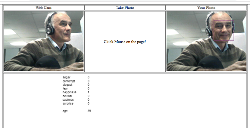

The C# project using only for wrapped all needed libraries and code.
Start page Index.html. This project run only with the newest browser(s) - Edge, Chrome, Opera.
Please use you <Face Detection KEY> see your subscription.
Detect one or more human faces in an image and get back face rectangles for where in the image the faces are, along with face attributes which contain machine learning-based predictions of facial features. The face attribute features available are: Age, Emotion, Gender, Pose, Smile, and Facial Hair along with 27 landmarks for each face in the image.
The Face API now integrates emotion recognition, returning the confidence across a set of emotions for each face in the image such as anger, contempt, disgust, fear, happiness, neutral, sadness, and surprise. These emotions are understood to be cross-culturally and universally communicated with particular facial expressions.
and some additional:
Face grouping Face identification Similar face search

Bring the project and run. This project run only with the newest browser(s) - Edge, Chrome, Opera.
DOES NOT WORK WITH IE 8,9,10,11.
The project using only HTML + JAVASCRIPT. It can be used with Window/Mac/Linux
Description
// Some usefull links, PROJECT uses p5.js library - see link
//https://www.youtube.com/watch?v=bkGf4fEHKak
//https://p5js.org
//https://processing.org/handbook/
//https://forum.processing.org/two/discussion/10913/saving-the-p5-js-canvas-as-an-image-on-my-server
//https://docs.microsoft.com/en-us/azure/cognitive-services/face/quickstarts/javascript
//https://docs.microsoft.com/en-us/azure/cognitive-services/emotion/quickstarts/javascript
/////////////////////////////////////////////////////////////////////////////////////
// Instance MODE
var myVideo = function (p) { // p could be any variable name
p.setup = function () {
p.canv = p.createCanvas(320, 240);
p.canv.parent('imgVideo'); //attache to the < div id = "imgVideo" ></div >
p.video = p.createCapture(p.VIDEO);
p.video.size(320, 240);
p.video.hide();
};
p.draw = function () {
p.image(p.video, 0, 0, 320, 240);
};
};
// Create new instance - for VIDEO
var myV = new p5(myVideo);
/////////////////////////////////////////////////////////////////////////////////////
// Instance MODE
var myPhoto = function (p) { // p could be any variable name
p.setup = function () {
p.canv = p.createCanvas(320, 240);
p.canv.parent('imgSnap'); //attache to the < div id = "imgSnap" ></div >
};
p.mouseClicked = function () {
p.image(myV.video, 0, 0, 320, 240);
p.takeSnap();
};
p.takeSnap = function () {
//processImage(); // How to Save ...
getFaceDetails();
};
};
// Create new instance - for Image.
var myP = new p5(myPhoto);
/////////////////////////////////////////////////////////////////////////////////////
// Some usefull links, PROJECT uses p5.js library - see link //https://www.youtube.com/watch?v=bkGf4fEHKak //https://p5js.org //https://processing.org/handbook/ //https://forum.processing.org/two/discussion/10913/saving-the-p5-js-canvas-as-an-image-on-my-server //https://docs.microsoft.com/en-us/azure/cognitive-services/face/quickstarts/javascript //https://docs.microsoft.com/en-us/azure/cognitive-services/emotion/quickstarts/javascript ///////////////////////////////////////////////////////////////////////////////////// // Instance MODE var myVideo = function (p) { // p could be any variable name p.setup = function () { p.canv = p.createCanvas(320, 240); p.canv.parent('imgVideo'); //attache to the < div id = "imgVideo" ></div > p.video = p.createCapture(p.VIDEO); p.video.size(320, 240); p.video.hide(); }; p.draw = function () { p.image(p.video, 0, 0, 320, 240); }; }; // Create new instance - for VIDEO var myV = new p5(myVideo); ///////////////////////////////////////////////////////////////////////////////////// // Instance MODE var myPhoto = function (p) { // p could be any variable name p.setup = function () { p.canv = p.createCanvas(320, 240); p.canv.parent('imgSnap'); //attache to the < div id = "imgSnap" ></div > }; p.mouseClicked = function () { p.image(myV.video, 0, 0, 320, 240); p.takeSnap(); }; p.takeSnap = function () { //processImage(); // How to Save ... getFaceDetails(); }; }; // Create new instance - for Image. var myP = new p5(myPhoto); /////////////////////////////////////////////////////////////////////////////////////
https://www.youtube.com/watch?v=bkGf4fEHKak
https://p5js.org//https://processing.org/handbook/
https://forum.processing.org/two/discussion/10913/saving-the-p5-js-canvas-as-an-image-on-my-server
https://docs.microsoft.com/en-us/azure/cognitive-services/face/quickstarts/javascript
https://docs.microsoft.com/en-us/azure/cognitive-services/emotion/quickstarts/javascript